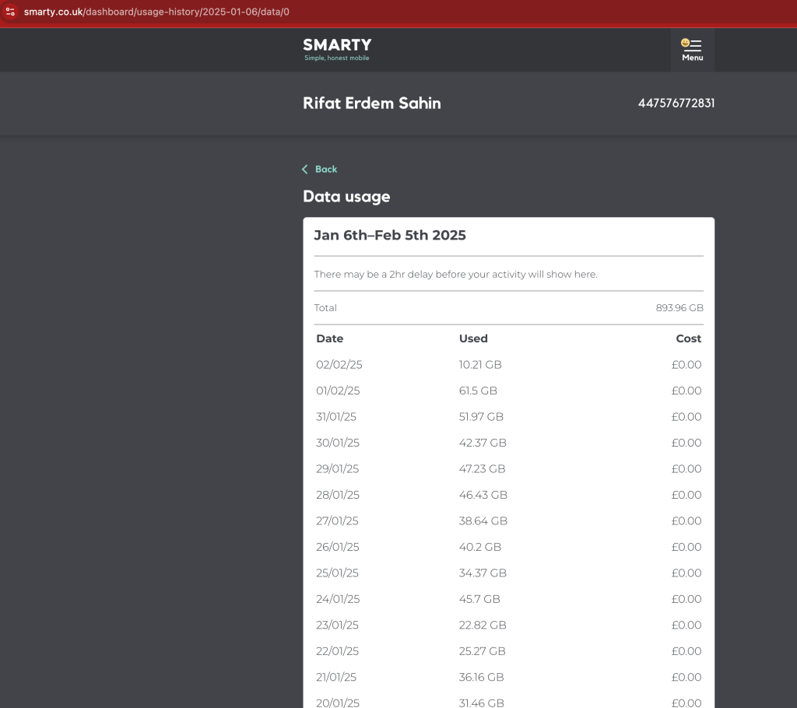

Optimizing Your Internet Experience with a 4G Router 📶💡
Date Range: January 6th – February 5th, 2025
Usage So Far: 893.96 GB
Plan: UnLimited

Are you looking to level up your home internet experience without breaking the bank? Whether you're streaming, gaming, or working from home, optimizing your network can make a huge difference. Let’s talk about how to make the most of your 4G router, with a special look at my recent data usage from January 6th to February 5th, 2025.
1. Understanding Your Data Usage
Here's a breakdown of my data usage over the past few weeks:
📊 Total Data Usage:
893.96 GB of data used!
Breakdown by Date:
-
Feb 2nd, 2025 – 10.21 GB
-
Feb 1st, 2025 – 61.5 GB
-
Jan 31st, 2025 – 51.97 GB
-
Jan 30th, 2025 – 42.37 GB
... and so on, with usage varying from 1.76 GB to over 51 GB on some days.
I haven’t been charged any extra for these gigs, so it's likely all part of a fair data plan I’m using. But what can we learn from this?
2. How to Keep Your 4G Router Running Smoothly 🚀
📱 Stay Connected Without Lag
A 4G router can be incredibly fast, but only if you’re setting it up right. Here's how to ensure you’re getting the best speeds possible:
-
Positioning is Key: Place your router in a central location with minimal obstacles. This ensures maximum signal strength.
-
Minimize Interference: Other devices like microwaves, baby monitors, and even thick walls can interfere with your signal. Keep the router away from these.
-
Limit Device Load: If too many devices are connected at once, your 4G speeds can drop. Prioritize important devices and consider setting up Quality of Service (QoS) to manage traffic better.
⚙️ Monitor Your Usage
A big part of optimizing your experience is knowing how much data you’re consuming. My daily logs show significant spikes on some days (like 61.5 GB on Feb 1st!). Whether you're working, streaming, or gaming, knowing when you go overboard can help you adjust.
3. Data Savings Tips 💸
While I haven’t been charged for extra gigs yet, if you're on a limited data plan, here are a few tips to avoid going over:
-
Use Data-Saving Apps: Many streaming services offer lower-quality streaming settings to conserve data.
-
Set a Data Limit on Your Router: Some routers let you set up alerts or data limits so you won’t be caught off guard.
-
Monitor Usage Regularly: Like I’ve done in my log, track your daily or weekly usage to stay ahead of any potential data limits.
4. Potential Pitfalls with 4G Routers ⚠️
While 4G routers are convenient and powerful, they do come with some caveats:
-
Signal Drops: In areas with weak cell tower coverage, your internet speed might drop unexpectedly.
-
Network Congestion: If many people are using the same network at the same time (like during peak hours), speeds can slow down.
-
Limited Data Plans: If you're using a capped data plan, keep a close eye on your usage to avoid overage fees.
5. The Takeaway – Smart Internet Experience at Home 🌐
By optimizing your 4G router, monitoring data usage, and utilizing smart tools, you can create a seamless internet experience at home. Whether it’s for work, entertainment, or gaming, this setup is both efficient and cost-effective.
If you're looking to optimize even further, consider using tools to track your internet usage, or even upgrade to a plan with more data if you’re a heavy user. In my case, 893.96 GB of usage so far in less than a month shows how quickly data can add up! 😅
🔗 Connect with Me!
Stay up to date with more tech tips, tricks, and insights by following me on social media!
Let me know how you're using your 4G router at home—any tips or hacks to share? I'd love to hear your experience! 💬
Imported from rifaterdemsahin.com · 2026